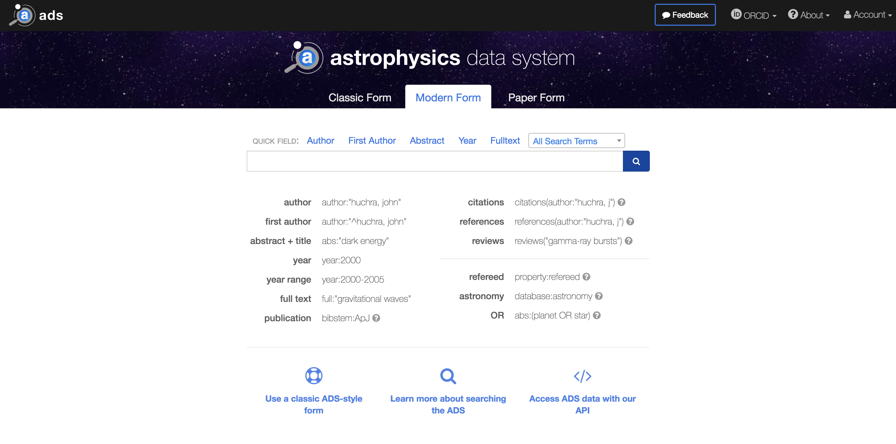

User Interface Status
ADSUG 2018
Tim Hostetler
Some stats from last year
- 30 Releases
- 517 Commits
- 110 Issues Closed

Parity with classic
- Co-author affiliation export tool
- Custom export formats
- Personalized user settings
- Classic search translator
Other Improvements
- Overall speed increases
- Reduce superfluous requests
- Better caching/storage usage
- Lazy loading highlights
- Better user feedback
- Loading bar
- Error messages
- Change in search style
- Better ORCiD integration
- Pagination updates
In the works
- myADS interface and sign-up screens (in planning)
- Some advanced ADS library features (in progress)
- Save/recall search history
- Export of citation metrics
- “Show similar articles” (in testing?)
Challenges
- Aging tech stack
- Difficult to maintain
- Only so fast, without major refactor
- Lack of front-end devs/specialists
Considerations
- Refactor/Update codebase
- Move to newer front-end frameworks/technologies
- How to transition properly
- Balance priorities
What refactoring could fix
- Additional speed improvements (perceived & actual)
- Easier maintenance, less bugs
- Search engines and other non-JavaScript crawlers
- Better UX
...
Bumblebee is showing its age
User Issues
Load Time
Average application load time >1s
Many unnecessary page renders/reflows
Lighthouse

Why?
- Based on older (+4 years) tech stack
- Hard to maintain
- Hard to integrate with user applications
- Bad mobile performance
Tech Stack
BackboneJs & React

Maintenance
- Separation of concerns
- Complicated builds
- Too many dependencies (100+ 3rd party libs)
- Testing is hard
Integrations & Search Engine optimization
- Zotero, Bookends, etc.
- Unfurl links
- Scrapers, non-JavaScript users
- Google, Bing, others
Unfurl Links
User Experience
- Not completely responsive
- Some negative user feedback
- Confusing or hidden features
Mobile responsiveness
Accessibility
- Facets not usable by screen readers
- Page regions can get readers into loops
- Some sections inaccessible
It Gets Better
Types of Web Applications
- Server-rendered (traditional)
- Client-rendered (single page application)
- Hybrid (universal)
Hybrid Approach
- Lives on both client and server
- Search engine optimization is easier
- Less load on server
Proposal
- Hybrid web app
- New tech stack
- Updated UI framework
New Tech Stack
- Vue.js
- Node.js server


How will it be better?
- Better state management
- Easier maintenance
- search engine optimization, non-JavaScript crawler support
- Responsive
Performance Goals
- Consistent load times < 1s
- Fewer page renders, utilizing virtual DOM
- Pre-rendering on server, hydrate on client
SEO, Non-JavaScript Goals
- Metadata rendered server-side
- Non-JavaScript users possible
- Google, Bing, unfurl crawlers should just work
User Experience
- Consolidate and simplify interface
- Easier to implement user requested features
- Better mobile usability
- Prioritize based on user feedback
Easier Maintenance
- Support newer language features
- Better tooling
- Batteries included (fewer dependencies)
- Simplified builds
- Easier testing
How We Get There
- Visual components need to be refactored
- User-facing part should stay mostly untouched
- Improvements to responsiveness
- Restructure of certain areas to provide better UX
- Gradual transition to new system
Questions?
Vue internals
- MVVM pattern
- Action -> Model -> Diff -> Render
- Virtual DOM
Vue MVVM

Vue Databinding

Flux
- Technique for state management
- Reducers and single store
- Non-immutable data structures
- Pure functions
Reducers
Middleware
Component Communication
Connected Components
Vuex
- Vue's implementation of Flux
- Baked into the core framework
Vuex

Nuxt
- SSR skeleton/framework for Vue
- Provides scripts, hooks, middleware, etc.
- Based on Node.js server
- Selective rendering
- Bundling of client/server automatically